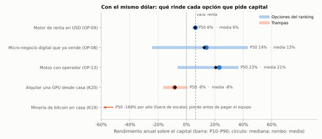
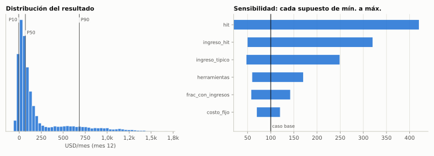
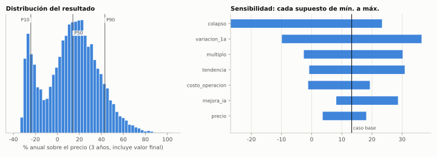
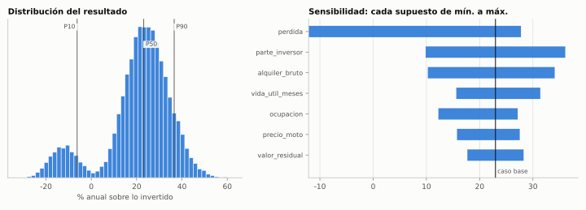
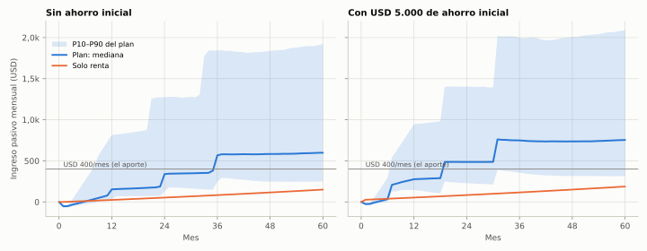

Preguntaste si hay forma de generar ingresos con IA o con otra cosa, aunque tarde un año, sin tener que salir a vender. La respuesta es sí, pero no como se suele ofrecer. Todo ingreso tiene un comprador: "sin vender" quiere decir elegir quién vende por vos. Puede ser el mercado, que paga intereses; una plataforma que ya tiene compradores; un operador que trabaja un activo tuyo; o un negocio que ya vende y que comprás. Con USD 400 por mes, este es el orden que mejor rinde por dólar y por hora:
| # | Opción | Quién vende por vos | Cuándo | Números clave | Puntaje |
|---|---|---|---|---|---|
| 1 | Fábrica de herramientas para agentes de IA y desarrolladores (las construye Claude) | Un marketplace (Apify) y agentes que pagan por uso | Ya | Mes 12: mediana +USD 70/mes netos; 17% de chances de superar USD 400/mes; se arriesga ≤ USD 450 | 86 |
| 2 | Motor de renta en USD | Nadie: el mercado paga intereses | Ya | ~6,5% anual; lo único 100% pasivo | 81 |
| 3 | Comprar un micro-negocio digital que ya vende solo | El canal que el negocio ya tiene | Compra entre el mes 6 y el 12 | Media 13% anual a 3 años; supuesto: 1 de cada 5 colapsa | 74 |
| 4 | Motos para repartidores a través de un operador | La demanda hace fila; el operador cobra | Solo con un operador verificable | Mediana 23% anual; el supuesto clave está sin verificar | 73 |
| 5 | App de suscripción "graduada" | Una tienda de apps para empresas | Solo si una herramienta del #1 pega | 20% de chances; si pega, ~USD 1.300/mes | 67 |
Lo que da el plan combinado. Se simularon 10.000 escenarios con USD 400/mes y todo reinvertido. El ingreso pasivo mediano queda en ~USD 150/mes al año 1, ~USD 340 al año 2 y ~USD 600 al año 5. En 73% de los escenarios supera los USD 400/mes al año 5, es decir, más que tu aporte. Solo con renta serían USD 24, 53 y 150.
Tiene dos costos. El primero es más riesgo: en 1 de cada 3 escenarios el patrimonio termina por debajo del que dejaría la renta sola. El segundo son 3–5 horas por semana tuyas, casi todas para revisar y aprobar lo que hace Claude.
Lo que no conviene, con números en el capítulo 5: bots de trading con IA, minería de bitcoin en casa, alquilar placas de video, rendimientos cripto de dos dígitos, granjas de contenido con IA, cursos en Udemy, cocheras a los precios actuales y mercados de predicción (Polymarket está bloqueado en Argentina desde marzo).
Qué hacer este mes
Sobre tus ejemplos. La IA de trading y la minería se tomaron como orientación, no como candidatas. Aparecen en el capítulo 5 solo porque son lo primero que se ofrece como "ingreso pasivo" y conviene saber por qué no.
Hay solo dos formas de cobrar sin trabajar cada mes: capital × rendimiento, o trabajo por adelantado que deja un activo que vende solo. La primera es simple de calcular:
| Rendimiento anual | Ejemplo | Capital necesario para cobrar USD 400/mes |
|---|---|---|
| 4% | Letras del Tesoro de EE.UU. (la Fed subió a 3,75–4,00% el 16-09-2026) | USD 120.000 |
| 6,5% | Mezcla de tesorería (letras + obligaciones negociables) | USD 73.800 |
| 25% | Un micro-negocio digital que se sostiene | USD 19.200 |
| 40% | Un micro-negocio barato que se sostiene | USD 12.000 |
Aportando USD 400 por mes al 6,5%, llegar a USD 73.800 lleva casi 11 años. La renta pura es segura pero lenta. Para acelerar hay que comprar flujos que rindan más (con más riesgo) o construir activos con trabajo, y la IA abarata mucho ese trabajo.
La IA abarató fabricar para todos al mismo tiempo, y lo que es fácil de fabricar vale menos. Los datos de 2026 son claros:
Conclusión. "Hacer algo con IA y esperar que se venda" es una lotería. Puede ser una lotería barata, pero no es un plan. La IA sí da ventaja en tres situaciones:
Primero se aplica un filtro: una opción entra al ranking solo si su valor esperado supera al de la renta con el mismo recurso. Si no lo supera, va a "trampas" (capítulo 5). Las que pasan el filtro se puntúan de 0 a 5 en siete criterios, ponderados según lo que pediste: que nadie tenga que salir a vender y que pida pocas horas.
| Criterio | Peso | Qué mide |
|---|---|---|
| Quién vende | 20% | 5 = no hace falta vender o la demanda llega sola; 0 = hay que salir a buscar clientes |
| Horas en régimen | 20% | 5 = < 1 h/semana; 3 = 2–4 h; 1 = > 8 h |
| Valor esperado por dólar | 20% | Contra la tesorería (2 = igual a la tesorería) |
| Pérdida máxima tolerable | 15% | 5 = se pierde poco y acotado; 1 = se puede perder todo el capital con probabilidad relevante |
| Calidad de la evidencia | 10% | 5 = datos de mercado sólidos; 1 = supuestos sin verificar |
| Encaje con el fundador | 10% | IA al máximo, logística, CABA, USD 400/mes |
| Tiempo al primer ingreso | 5% | 5 = mes 1; 1 = > 12 meses |
| # | Opción | Quién vende por vos | Cuándo | Capital | Horas | Números | Puntaje |
|---|---|---|---|---|---|---|---|
| 1 | Fábrica de herramientas para agentes y desarrolladores (OP‑12) | El marketplace (Apify) y los agentes que pagan por uso (MCP, x402) | Ya (oct-2026) | USD 50/mes atribuibles | 2 h/sem | Mes 12: P10 / P50 / P90 = −6 / +70 / +683 USD/mes netos; 17% > USD 400 | 86 |
| 2 | Motor de renta en USD (tesorería) (OP‑09) | Nadie: el mercado paga intereses | Ya (primer aporte) | Todo lo que no tenga mejor destino | < 1 h/sem | ~6,5% anual: USD 24/mes de renta al mes 12; USD 150/mes al mes 60 | 81 |
| 3 | Comprar un micro-negocio digital que ya vende solo (OP‑08) | El canal que el negocio ya tiene (tienda de apps, marketplace, buscador) | Embudo ya; compra entre el mes 6 y el 12 | USD 3.000–8.000 la primera | 3–4 h/sem | 3 años: media 13% anual; P10 / P50 / P90 = −24% / 14% / 43%; 61% supera a la tesorería | 74 |
| 4 | Motos para repartidores a través de un operador (OP‑13) | La demanda hace fila; el operador cobra y mantiene | Tras encontrar un operador verificable (mes 8+) | USD 2.500 por moto | ~1 h/sem | Retorno anual P10 / P50 / P90 = −6% / 23% / 37% (supuesto clave sin verificar) | 73 |
| 5 | App de suscripción en una tienda B2B (graduada) (OP‑14) | La tienda (Shopify, Chrome, Google Workspace) + reseñas | Solo si una herramienta de la fábrica pega | USD 200–1.000 | 3 h/sem | 20% de tracción; si funciona P50 ≈ USD 1.340/mes al mes 18; mediana incondicional: se cierra | 67 |
| Opción | Quién vende (20%) | Horas en régimen (20%) | Valor esperado por dólar (20%) | Pérdida máxima tolerable (15%) | Calidad de la evidencia (10%) | Encaje con el fundador (10%) | Tiempo al primer ingreso (5%) | Total |
|---|---|---|---|---|---|---|---|---|
| OP‑12 | 5 | 3 | 5 | 5 | 3 | 5 | 3 | 86 |
| OP‑09 | 5 | 5 | 2 | 4 | 5 | 3 | 5 | 81 |
| OP‑08 | 5 | 3 | 4 | 2 | 4 | 5 | 2 | 74 |
| OP‑13 | 5 | 4 | 4 | 2 | 2 | 4 | 3 | 73 |
| OP‑14 | 4 | 2 | 4 | 4 | 3 | 4 | 1 | 67 |

El gráfico compara solo las opciones que piden capital. La fábrica (OP-12) y la app (OP-14) casi no piden capital, así que se miden en dólares por mes (capítulo 4). El motor de renta incluye un 15% de probabilidad de un evento Argentina 2027 que golpea la tesorería.
Qué es. Claude construye y mantiene herramientas chicas que desarrolladores y agentes de IA usan y pagan por uso. Son herramientas de cálculo, validación y datos oficiales con lógica argentina y logística. Se publican en Apify Store, que pasa 80% de lo cobrado al desarrollador menos el costo de ejecución. Cada una también se publica como servidor MCP, el formato con el que los agentes de IA usan herramientas, y es cobrable vía x402, el protocolo de pagos de agentes. Nadie sale a vender: los compradores buscan en el catálogo o los agentes eligen por especificación y precio.
Por qué ahora. Apify paga ~USD 1,4 M por mes a ~3.000 desarrolladores y el 01-10-2026 retira el alquiler mensual para quedarse con el pago por uso, así que el catálogo se reacomoda. x402 movió USD 24 M en 30 días a mediados de septiembre de 2026, y más de 20.000 herramientas de Apify ya son cobrables por agentes. Es la etapa temprana de un canal donde el comprador no necesita un vendedor.
Qué se fabrica, y qué no. Se fabrica lo que una fábrica genérica no sabe resolver:
No se fabrican: extractores de sitios que lo prohíben, herramientas con datos personales ni copias de herramientas que ya tienen líder. Los nichos obvios, como el padrón de AFIP o el seguimiento de contenedores, ya tienen dueño.

Números (margen neto al mes 12): P10 / P50 / P90 = −6 / +70 / +683 USD/mes; media 195. En 87% de los casos cubre su costo, en 39% supera USD 100/mes y en 17% supera USD 400/mes. Lo que decide todo es que aparezca una herramienta que "pegue".
Quién hace qué. Claude investiga la demanda, programa, prueba, publica, fija precios, mantiene y responde consultas técnicas. Vos creás la cuenta, habilitás el acceso de red, aprobás la lista y cada publicación, y dedicás unas 2 horas por semana.
Regla de corte. A los 90 días: ≥ 15 herramientas publicadas, ≥ 30 usuarios mensuales y ≥ USD 40/mes facturados. Al mes 9, si no factura USD 40/mes, se cierra. Si una herramienta muestra usuarios recurrentes crecientes durante 3 meses seguidos, se "gradúa" a la opción 5.
Qué es. Cada mes, la parte del aporte que no tiene mejor destino compra un tramo de una escalera de instrumentos en dólares. Es lo único que genera ingreso sin ninguna intervención.
| Instrumento | Referencia (sep-2026) | Riesgo | Rol |
|---|---|---|---|
| Letras del Tesoro de EE.UU. o fondos de letras | ~4% (Fed 3,75–4,00% desde el 16-09-2026) | Muy bajo; requiere cuenta en el exterior o fondo local equivalente | Liquidez y cobertura fuera de Argentina |
| Obligaciones negociables hard dollar de exportadores (YPF, Pampa, TGS, Pluspetrol, Telecom) | TIR ~7,0–7,9% | Riesgo empresa + riesgo Argentina | Núcleo de la renta |
| Bonos soberanos (Globales, Bonares) | Rinden más; riesgo país en 609 pb el 25-09-2026 | Riesgo Argentina 2027 | Solo una parte chica |
| Índice amplio (S&P 500 vía CEDEAR) | Crecimiento, no renta | Volatilidad | Largo plazo: 92,6% de los fondos activos de grandes empresas de EE.UU. rinde menos que el S&P 500 en 20 años (SPIVA 2026) |
| Stablecoins con rendimiento | 5–10% ofrecido (hasta 17% en plataformas poco conocidas) | Contraparte | Solo tránsito, con tope |
Reglas. Un tramo por mes, que evita adivinar el momento. Al menos 4 emisores y no más de 25% en uno. Un colchón de USD 1.000 que no se toca. Ojo con los dividendos de empresas de EE.UU.: no hay convenio de doble imposición y te retienen 30%. Para renta convienen los intereses.
Quién hace qué. Claude arma la lista mensual con las tasas del día, controla la concentración y lleva el libro de capital. Vos ejecutás la compra en tu cuenta. Esto no es asesoramiento financiero regulado: es análisis para tu decisión.
Qué es. Comprar, en marketplaces como Flippa, Microns o Acquire.com, un negocio chico que ya cobra y cuyos clientes llegan solos. Puede ser una extensión de Chrome, un plugin, una app de Shopify o un pequeño SaaS. Después se opera con IA (soporte, arreglos, mejoras). Es la forma más directa de "comprar ingresos que ya se venden solos", y cobra en dólares de clientes de todo el mundo.
Evidencia. En Flippa, las operaciones de USD 10–100 k se pagan a una mediana de 1,68 veces el beneficio anual. Los SaaS en Acquire.com se pagan a 3,9 veces (2025). Hay negocios en venta desde USD 1.000, y "más SaaS de menos de USD 10 k a la venta que nunca". Desde abril de 2026 el BCRA permite a personas humanas no liquidar los dólares de exportaciones de servicios.

Números (compra de USD 3–12 k, 3 años, incluye el valor final): media 13% anual; P10 / P50 / P90 = −24% / 14% / 43%. En 61% de los casos supera a la renta. La distribución tiene dos jorobas: la de los negocios que se sostienen y la de los que colapsan por fraude no detectado o pérdida del canal.
La verdad incómoda. Los negocios chicos son baratos porque son riesgosos. Si comprás "al promedio", rendís parecido a la renta con mucho más riesgo. La ventaja está en comprar mejor que el promedio, porque el colapso es la variable que más pesa, y en operar mejor, porque la tendencia y la mejora con IA son las siguientes. Por eso la due diligence vale más que la negociación.
Qué comprar
Quién hace qué. Claude arma el embudo semanal, hace la due diligence, redacta las preguntas al vendedor y, después de la compra, opera el negocio. Vos aprobás cada contacto con vendedores y cada compra, y resolvés con un contador la estructura de cobro y la declaración.
Primer paso (EXP-08). Cinco due diligence de práctica sobre listados reales, sin comprar nada, en 60 días. Si alguno pasa todos los criterios a ≤ 2,5 veces el beneficio, se prepara la primera compra real, con tope de USD 8.000.
Qué es. Comprar motos que un operador de flota alquila, o vende en cuotas, a repartidores de aplicaciones en el AMBA. Un repartidor sin moto paga ~$120–125 mil por semana, con seguro, patente y mantenimiento incluidos (avisos y notas recientes; la fecha de la nota de Telefe no está verificada). Hay listas de espera: MotoRenta llegó a 300 motos en 4 meses con 50 personas esperando. Una Honda Wave 110S cuesta $3,43–4,02 M. Es la opción que mejor usa tu conocimiento logístico sin vender.

Números (retorno anual sobre lo invertido, con amortización y reventa): P10 / P50 / P90 = −6% / 23% / 37%. Supera a la renta en 87% de los casos. El supuesto que más pesa es qué parte del alquiler llega al inversor (30–50%), y es el que no tiene evidencia: hay que verificarlo con operadores.
Riesgos que deciden
Primer paso. Claude arma el mapa de operadores y la lista de preguntas de due diligence. Vos hacés 2–3 entrevistas presenciales: no es vender, es evaluar a un proveedor. Si ningún operador acepta inversores con contrato, seguro y rastreo, se descarta.
Qué es. Cuando una herramienta de la fábrica muestra usuarios recurrentes que crecen, se convierte en una app de suscripción en una tienda con compradores empresas: Shopify App Store, Chrome Web Store o Google Workspace Marketplace. Shopify deja al desarrollador el 100% del primer millón de dólares de por vida. Se evitan las tiendas de consumo masivo, inundadas por apps hechas con IA.
Números. 20% de probabilidad de tracción. Si funciona, la mediana es ~USD 1.340/mes al mes 18. Si no, se cierra perdiendo poco. En Chrome, la mitad de las extensiones que cobran gana menos de USD 100/mes y ~5% gana más de USD 10.000.
Regla. No se arranca de cero: solo se gradúa lo que ya mostró demanda. El soporte lo responde la IA con plantillas que vos aprobás una vez.
Estas ideas son las que primero se ofrecen como "ingreso pasivo". Ninguna pasa el filtro de superar a la renta con el mismo recurso. Los números son de septiembre de 2026.
| Idea | Por qué atrae | Qué dicen los números | Veredicto |
|---|---|---|---|
| Bots o "IA que opera sola" en bolsa o cripto | Promete ganar sin hacer nada | 97% de los day traders brasileños que persistieron más de 300 días perdió plata (Chague et al., 19.646 casos); 92,6% de los fondos activos de grandes empresas de EE.UU. rinde menos que el S&P 500 en 20 años (SPIVA 2026); la CNV y la CFTC advierten que los "bots inteligentes" son un disfraz frecuente de estafas | No. Si existiera una ventaja, la usarían los fondos cuantitativos con más datos y velocidad |
| Minería de bitcoin en casa | Máquina que "imprime" plata | Con un hashprice de USD 39,6/PH/día y electricidad residencial de ~USD 0,11–0,18/kWh, un equipo de 200 TH ingresa ~USD 234/mes y gasta ~USD 366 de luz: pierde ~USD 180/mes con el equipo incluido (modelo K19); consume ~2.500 kWh/mes; en 2028 el halving corta el ingreso a la mitad | No. Solo tendría sentido con energía propia a menos de USD 0,05/kWh |
| Alquilar una placa de video (Vast.ai y similares) | La IA "necesita GPU" | La placa cuesta USD 3.500–5.000 por la escasez de memoria y supera el tope courier de USD 3.000; se alquila desde ~USD 0,27/h con uso incierto: mediana −USD 36/mes después de amortización y 88% de probabilidad de perder (modelo K20) | No. Se compite contra centros de datos con energía más barata |
| Rendimientos cripto de 10–17% en dólares digitales | "Plazo fijo en dólares" alto | Todo lo que paga muy por encima de las letras (~4%) cobra riesgo de contraparte (Celsius, BlockFi y FTX quebraron en 2022) | Solo como tránsito, con tope, en plataformas registradas ante la CNV |
| Mercados de predicción (Polymarket) con o sin bots | Apuestas "informadas" | Bloqueado en Argentina por orden judicial desde el 16-03-2026 | No |
| Granjas de contenido con IA (YouTube, libros en KDP, láminas en Etsy, imágenes de stock) | "Fabricar" contenido gratis | YouTube desmonetiza el contenido masivo (cerró 16 canales con ~4.700 M de vistas en ene-2026); KDP exige declarar IA; Etsy retiró 12.000+ publicaciones en el 1T-2026; Google deriva ~58% menos clics con resumen de IA | No como negocio |
| Cursos en Udemy | Grabar una vez, cobrar siempre | Udemy bajó al instructor al 15% en suscripciones desde el 01-01-2026 y empuja a los alumnos hacia la suscripción | No sin audiencia propia |
| Cocheras en CABA | Renta en ladrillo | 4–4,8% bruto en USD; con expensas e impuestos, casi nada neto; USD 20–30 k por unidad | Rinde menos que la renta financiera |
| Autos para apps de movilidad a tu nombre | "Renta pasiva" ofrecida por administradoras | Fallo porteño de mayo de 2026: licencia profesional y seguro de pasajeros para los conductores; responsabilidad objetiva del dueño; renta en pesos | No por ahora; ver la versión con motos (OP-13) |
| Importar y revender en Mercado Libre | "El marketplace vende por mí" | Comisiones de 11–17,5% + costos fijos + IVA sobre cargos + Full; Mercado Libre abrió un hub en China para que los fabricantes vendan directo | No es pasivo: es un comercio con márgenes que se achican (K8) |
La pregunta que sirve para cualquier oferta futura: si alguien te ofrece un ingreso pasivo, preguntá quién pierde plata para que vos ganes y por qué no lo hace él con su propio dinero. Si no hay una respuesta clara, la respuesta sos vos.

| Escenario | Ingreso pasivo mes 12 (P10 / P50 / P90) | Mes 24 | Mes 60 | Patrimonio mes 60 (P50) | P(ingreso ≥ USD 400 al mes 60) |
|---|---|---|---|---|---|
| Plan base (renta + fábrica + compras) | 31 / 153 / 814 | 129 / 338 / 1.274 | 248 / 598 / 1.923 | 33.267 | 73% |
| Plan base con ahorro inicial de USD 5.000 | 144 / 276 / 945 | 229 / 487 / 1.404 | 314 / 755 / 2.092 | 44.761 | 83% |
| Plan base + motos con operador (satélite) | 30 / 151 / 855 | 152 / 277 / 1.249 | 331 / 683 / 1.969 | 35.085 | 84% |
| Solo renta (con riesgo de shock) | 22 / 24 / 27 | 47 / 52 / 57 | 135 / 149 / 165 | 28.200 | 0% |
Valores en USD por mes; 10.000 simulaciones. Referencia sin shock (solo renta al 6,5%): USD 24 / 53 / 150 por mes a los meses 12 / 24 / 60 y patrimonio de USD 28.270 al mes 60 (aportado: USD 24.000). En el plan base la fábrica sobrevive a la regla de corte en 85% de las simulaciones y el patrimonio al mes 60 supera al de solo renta en 67%.
| Mes | Vos | Claude | Resultado esperado |
|---|---|---|---|
| Octubre 2026 | Cuenta en una ALyC y primer tramo de renta · cuenta en Apify y medio de cobro (PayPal o banco) · habilitar la red del entorno · consulta a un contador sobre cobros en USD | Lista de 20 herramientas candidatas con evidencia de demanda · primeras 5 publicadas · criterios de compra escritos · embudo semanal de negocios en venta · mapa de operadores de motos | Renta funcionando; 5 herramientas en línea; embudo activo |
| Noviembre 2026 | Aprobar herramientas nuevas · segundo tramo de renta · (opcional) 2 entrevistas con operadores de motos | 10 herramientas en total · 3 due diligence de práctica · tablero mensual de la fábrica | Primeros usuarios; criterios de compra calibrados |
| Diciembre 2026 | Tercer tramo · decisión en el comité mensual | 15 herramientas (umbral de 90 días) · 5 due diligence completas (cierre de EXP-08) · informe de comité | Decisión: seguir o cortar la fábrica, y preparar la primera compra real |
Una vez
Acceso de red del entorno. Hoy la política de red de este entorno bloquea apify.com, flippa.com, microns.io y acquire.com. Se cambia en la configuración del entorno: menú del entorno en la barra de título de la sesión → Edit → Network access. Ahí podés elegir un nivel de acceso más amplio o agregar esos dominios.
Cada vez
Semanal: 2–3 horas para revisar lo que hizo Claude y decidir.
herramientas/plan_sin_venta.py simula el plan combinado y se puede recorrer con otros supuestos, como
ahorro inicial, aporte o topes. Hay modelos nuevos en herramientas/modelos/: op08b, op12, op13, op14 y los descartes k19 y k20.El primer informe sigue valiendo como mapa del terreno. Este define por dónde se empieza con tu preferencia.
Consultadas el 26-09-2026 a través de resultados de búsqueda, porque la red del entorno bloquea la lectura directa de la mayoría de
los sitios. El detalle, línea por línea, está en conocimiento/2026-09-26-investigacion-ingresos-sin-vender.md. Todo dato que
decida capital se re-verifica en la fuente primaria.
Tasas y mercados
Marketplaces y canales
Adquisiciones
Activos reales y regulación local
Trampas
Cada modelo vive en herramientas/modelos/ y se corre con python3 herramientas/escenarios.py <modelo>. Las distribuciones son
triangulares (mínimo, más probable, máximo) salvo que se indique otra cosa. La simulación del plan está en
herramientas/plan_sin_venta.py y sus supuestos en cartera/plan-sin-venta.yaml.
Salida: margen (USD/mes (mes 12)). Media 195; P10 / P50 / P90: -6 / 70 / 683.
| Supuesto | Mín. | Más probable | Máx. | Descripción |
|---|---|---|---|---|
| herramientas | 15 | 35 | 70 | HIPÓTESIS: herramientas publicadas y mantenidas al mes 12 (Claude construye ~1 por semana; el fundador revisa) |
| frac_con_ingresos | 0.1 | 0.25 | 0.4 | HIPÓTESIS: fracción que genera algún ingreso (fuera del top-900 de Apify la mayoría no cobra) |
| ingreso_tipico | 2 | 8 | 25 | HECHO→ESTIMACIÓN: ingreso neto mensual de una herramienta que cobra algo; mediana USD 14 entre las 829 de terceros del top-900 (2026) |
| hit | — | p = 0.2 | — | HIPÓTESIS: al menos una herramienta 'pega' (usuarios recurrentes o un cliente grande) |
| ingreso_hit | 150 | 400 | 1500 | HECHO→ESTIMACIÓN: la primera herramienta de ParseForge paga ~USD 1.000/mes; los mejores independientes > USD 10.000 |
| costo_fijo | 30 | 50 | 80 | ESTIMACIÓN: parte atribuible de Claude Max 5x (compartido con todo el sistema) + proxies y dominios |
Salida: retorno_anual_pct (% anual sobre el precio (3 años, incluye valor final)). Media 13; P10 / P50 / P90: -24 / 14 / 43.
| Supuesto | Mín. | Más probable | Máx. | Descripción |
|---|---|---|---|---|
| precio | 3000 | 6000 | 12000 | HIPÓTESIS: precio pagado; se junta con ~12 meses de aporte |
| multiplo | 1.4 | 2.0 | 3.2 | HECHO→ESTIMACIÓN: Flippa, mediana 1,68x el beneficio anual en operaciones de USD 10–100 k; SaaS en Acquire 3,9x (2025) |
| variacion_1a | -0.5 | -0.15 | 0.2 | HIPÓTESIS: cambio del beneficio en el primer año (se va el dueño, competencia con IA, cambios de la plataforma) |
| tendencia | -0.3 | -0.05 | 0.2 | HIPÓTESIS: variación anual del beneficio desde el segundo año |
| mejora_ia | 0.0 | 0.1 | 0.4 | HIPÓTESIS: mejora por operar con IA (soporte, arreglos, precios, funciones nuevas) |
| colapso | — | p = 0.2 | — | HIPÓTESIS: fraude no detectado o pérdida del canal (más probable en operaciones chicas) |
| mes_colapso | 1 | 6 | 24 | HIPÓTESIS: mes en que colapsa, si colapsa |
| costo_operacion | 15 | 40 | 100 | ESTIMACIÓN: hosting, herramientas y cuota de IA atribuible (USD/mes) |
| factor_salida | 0.6 | 0.85 | 1.0 | HIPÓTESIS: múltiplo de reventa al año 3 relativo al de compra |
Salida: retorno_anual_pct (% anual sobre lo invertido). Media 21; P10 / P50 / P90: -6 / 23 / 37.
| Supuesto | Mín. | Más probable | Máx. | Descripción |
|---|---|---|---|---|
| precio_moto | 2300 | 2500 | 2900 | HECHO→ESTIMACIÓN: Honda Wave 110S $3,43–4,02 M (sep-2026) ≈ USD 2.220–2.600 + patentamiento |
| alquiler_bruto | 250 | 330 | 400 | HECHO→ESTIMACIÓN: $120–125 mil por semana con seguro, patente y mantenimiento ≈ USD 330/mes a $1.545 (sep-2026); baja si el peso se deprecia |
| ocupacion | 0.7 | 0.88 | 0.95 | HIPÓTESIS: semanas cobradas sobre semanas totales (hay lista de espera; la mora y el recambio de repartidores la bajan) |
| parte_inversor | 0.3 | 0.4 | 0.5 | HIPÓTESIS: lo que el operador paga al dueño después de seguro, patente, mantenimiento, cobranza y su margen |
| vida_util_meses | 24 | 30 | 42 | HIPÓTESIS: vida útil en reparto intensivo |
| valor_residual | 0.15 | 0.3 | 0.45 | HIPÓTESIS: valor de reventa al final, como fracción del precio |
| perdida | — | p = 0.12 | — | HIPÓTESIS: pérdida grave en la vida útil (robo sin cobertura plena, fraude del operador, juicio por accidente) |
Salida: margen (USD/mes (mes 18)) · Éxito supuesto: 20%. Media 280; P10 / P50 / P90: -40 / -40 / 1.357 (incondicional).
| Supuesto | Mín. | Más probable | Máx. | Descripción |
|---|---|---|---|---|
| suscriptores | 15 | 60 | 250 | HIPÓTESIS: suscriptores pagos al mes 18 si la app encuentra demanda |
| precio | 6 | 12 | 30 | HECHO→ESTIMACIÓN: mediana del plan más barato de apps pagas en Shopify USD 9,99/mes (2026) |
| comision | 0.0 | 0.05 | 0.15 | HECHO: Shopify 0% hasta USD 1 M de por vida; ExtensionPay 5%; merchant of record 5% + 0,50 |
| costos | 20 | 60 | 150 | ESTIMACIÓN: hosting, APIs (incluida IA) y soporte asistido por IA |
Salida: margen (USD/mes por equipo). Media -184; P10 / P50 / P90: -261 / -183 / -108.
| Supuesto | Mín. | Más probable | Máx. | Descripción |
|---|---|---|---|---|
| hashprice | 25 | 38 | 55 | HECHO→ESTIMACIÓN: USD 39,6 por PH/s por día el 07-09-2026 (jul-2026 ~29) |
| th | — | 200 | — | Equipo tipo Antminer S21 (200 TH/s) |
| eficiencia | 15 | 17.5 | 21 | HECHO: J/TH de la generación S21 |
| tarifa | 0.11 | 0.14 | 0.18 | HECHO→ESTIMACIÓN: CABA residencial sin subsidio ~$158–207/kWh + impuestos ≈ USD 0,11–0,18 |
| precio_equipo | 900 | 1230 | 1800 | HECHO→ESTIMACIÓN: S21 200 TH nuevo USD 907–1.230 (sep-2026) + importación |
| vida_util | 18 | 24 | 36 | HIPÓTESIS: meses hasta que el equipo deja de ser competitivo (halving esperado en 2028) |
Salida: margen (USD/mes por equipo). Media -35; P10 / P50 / P90: -72 / -36 / 3.
| Supuesto | Mín. | Más probable | Máx. | Descripción |
|---|---|---|---|---|
| precio_hora | 0.2 | 0.3 | 0.45 | HECHO: RTX 5090 en Vast.ai desde ~USD 0,27–0,31/h (spot desde 0,09) en 2026 |
| utilizacion | 0.25 | 0.5 | 0.8 | HIPÓTESIS: fracción del tiempo alquilada (depende de confiabilidad y conexión) |
| comision | — | 0.15 | — | HECHO→ESTIMACIÓN: comisión de la plataforma al anfitrión ~15% |
| consumo_kw | 0.45 | 0.6 | 0.75 | ESTIMACIÓN: placa + resto del equipo bajo carga |
| tarifa | 0.11 | 0.14 | 0.18 | HECHO→ESTIMACIÓN: CABA residencial sin subsidio + impuestos |
| precio_equipo | 4000 | 5000 | 6500 | HECHO→ESTIMACIÓN: placa USD 3.500–5.000 en sep-2026 (escasez de GDDR7) + resto del equipo + importación formal (supera el tope courier de USD 3.000) |
| vida_util | 24 | 36 | 48 | HIPÓTESIS: meses de vida comercial |
| valor_residual | 0.2 | 0.35 | 0.5 | HIPÓTESIS: reventa al final |
| Término | Significado |
|---|---|
| Ingreso pasivo | Ingreso que no exige trabajo cada mes; en este informe incluye "casi pasivo" (pocas horas de supervisión) |
| Marketplace | Plataforma donde compradores y vendedores ya se encuentran (Apify Store, Shopify App Store, Chrome Web Store, Flippa) |
| Apify / Actor | Plataforma de herramientas de datos y automatización; cada herramienta publicada es un Actor |
| MCP | Model Context Protocol: estándar para que los agentes de IA usen herramientas externas |
| x402 | Protocolo de pagos por HTTP con el que los agentes pagan por llamada |
| Pago por evento | El usuario paga por cada acción de la herramienta (una consulta, un resultado) |
| Due diligence | Verificación previa a una compra: ingresos, tráfico, código, riesgos |
| Múltiplo | Precio de un negocio dividido por su beneficio anual |
| Escalera de renta | Compras periódicas de instrumentos con vencimientos escalonados |
| ON hard dollar | Obligación negociable (bono de empresa) que paga en dólares |
| P10 / P50 / P90 | Percentiles de la simulación: 10% de los casos queda por debajo del P10; la mitad, por debajo del P50 (mediana) |
| Media vs mediana | En resultados con "aciertos" raros, la media queda muy por encima de la mediana: la tiran pocos casos |
| Hashprice | Ingreso de la minería de bitcoin por unidad de potencia de cálculo por día |
| PSAV | Proveedor de Servicios de Activos Virtuales registrado ante la CNV |